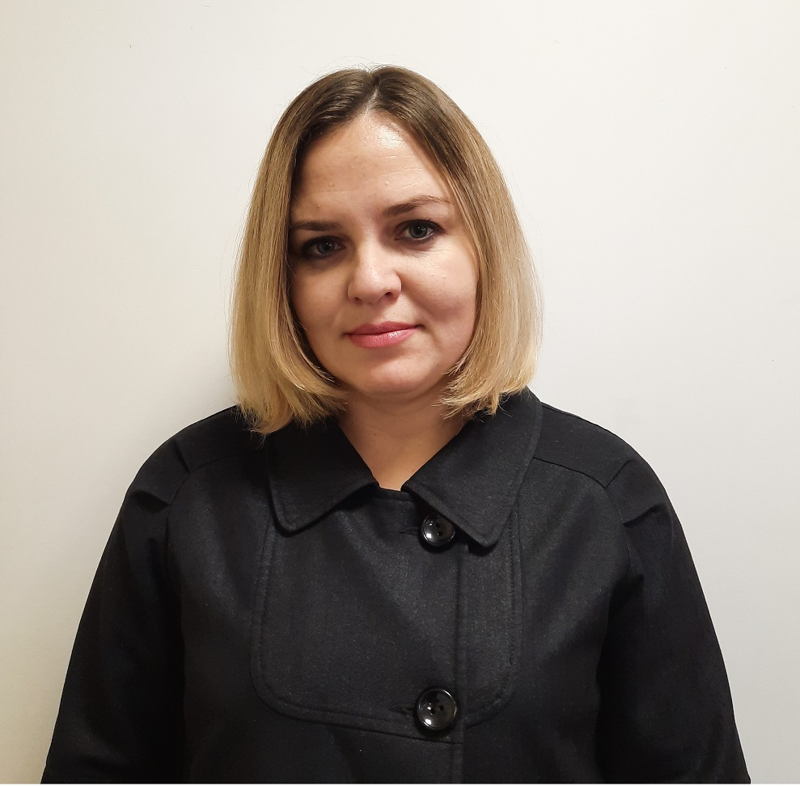

Единый раздел
Контакты, службы и деятельность поселения
На этой странице собраны контакты администрации, порядок личного приёма граждан, службы и предприятия, направления деятельности, НПА, меры поддержки и муниципальные программы.
На этой странице собраны контакты администрации, порядок личного приёма граждан, службы и предприятия, направления деятельности, НПА, меры поддержки и муниципальные программы.
Нажмите кнопку ниже — откроется общий порядок личного приёма и закрытые карточки сотрудников по должностям.
Глава администрации

Заместитель Главы администрации
Главный специалист
Делопроизводитель по воинскому учету
Личный прием граждан в государственных органах, органах местного самоуправления проводится их руководителями и уполномоченными на то лицами. Информация о месте приема, а также об установленных для приема днях и часах доводится до сведения граждан.
Кнопка «Открыть раздел» ведёт на отдельную страницу внутри сайта, где размещена информация по выбранному направлению.
Коммунальная инфраструктура, водоснабжение, водоотведение и аварийное взаимодействие.
Открыть разделСведения о промышленных площадках и возможностях для предпринимателей и инвесторов.
Открыть разделСправочная информация по электроснабжению и энергетической инфраструктуре.
Открыть разделМатериалы о промышленном направлении, производственных организациях и экономическом развитии.
Открыть разделИнформация о сельскохозяйственном направлении и организациях аграрной сферы.
Открыть разделОсновные контакты, адрес, телефон, электронная почта и сведения для приёма граждан.
Открыть разделВ блоке оставлены только нужные направления. Каждая карточка открывает внутреннюю страницу сайта.
Содержание жилья, вопросы собственников, управление многоквартирными домами.
Открыть разделПамятки, профилактика, общественная безопасность и защита жителей.
Открыть разделСоциальные вопросы, помощь жителям и полезные сведения для семей.
Открыть разделИнформация о медицинской помощи, профилактике и здоровье жителей.
Открыть разделУчреждения, образовательная среда и информация для родителей.
Открыть разделКультурная жизнь, учреждения, мероприятия и творческие инициативы.
Открыть разделСпортивная активность, мероприятия и поддержка здорового образа жизни.
Открыть разделЗастройка, развитие территории, планирование и градостроительные материалы.
Открыть разделЗемельные участки, оформление, использование и правовые вопросы.
Открыть разделДополнительный справочный раздел с официальными ссылками на ЖКХ, безопасность, транспорт, медицину, образование, культуру, спорт, социальную помощь и материалы о поселении.
Материалы, которые относятся к нормативно-правовой части и контролю деятельности. Карточки открывают официальный сайт.
Разделы для жителей, предпринимателей и организаций, которым нужна информация о поддержке. Карточки открывают официальный сайт.
Муниципальные программы и направления развития. Карточки открывают официальный сайт.